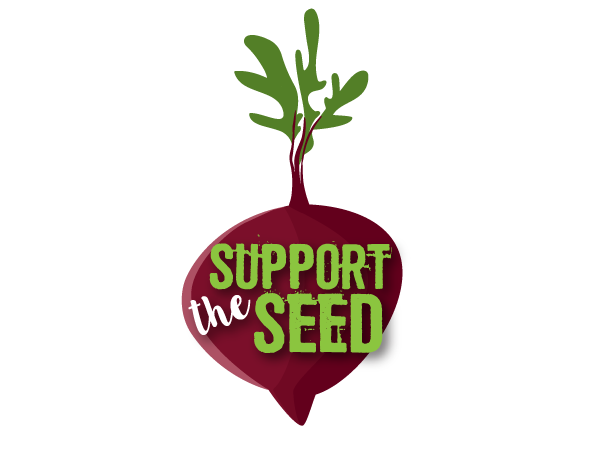
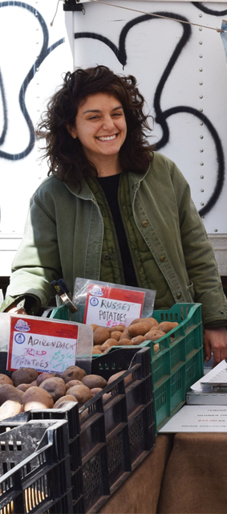

Although conventional supermarkets are usually more convenient than your local farmer’s market, more markets have appeared throughout Nassau and Suffolk counties on Long Island. When researching the benefits of farmer’s markets over conventional supermarkets, the health benefits are evident. Farmer’s markets provide the community with fresher, healthier and more nutritious food.
Buy Local

Read More
Long Island Markets
Long Island Farmers' Markets are more convenient than you think. Both winter and summer months provide island's comsumers with local, fresh products.
Winter Markets
listed are markets in the months of October-May
- one
- two
- three
- four
- five
Summer Markets
listed are markets in the months of April-September
- one
- two
- three
- four
- five
Facts

Community
A Feeling Of Locality

Distance
From Farm To Table

Profit Margin
Comsumer Support
Security
Access To Local Produce
Gallery